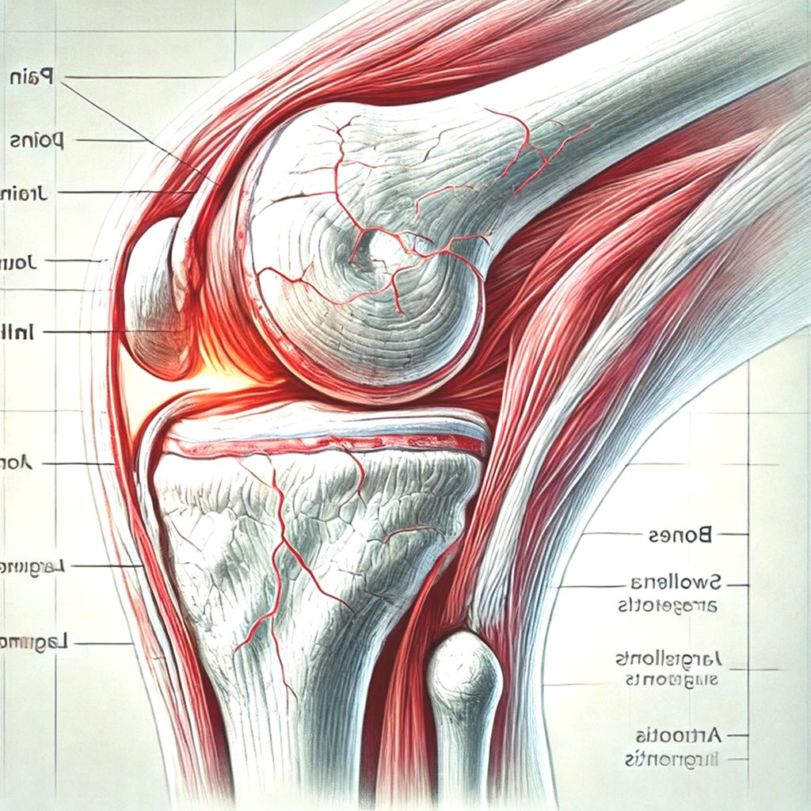
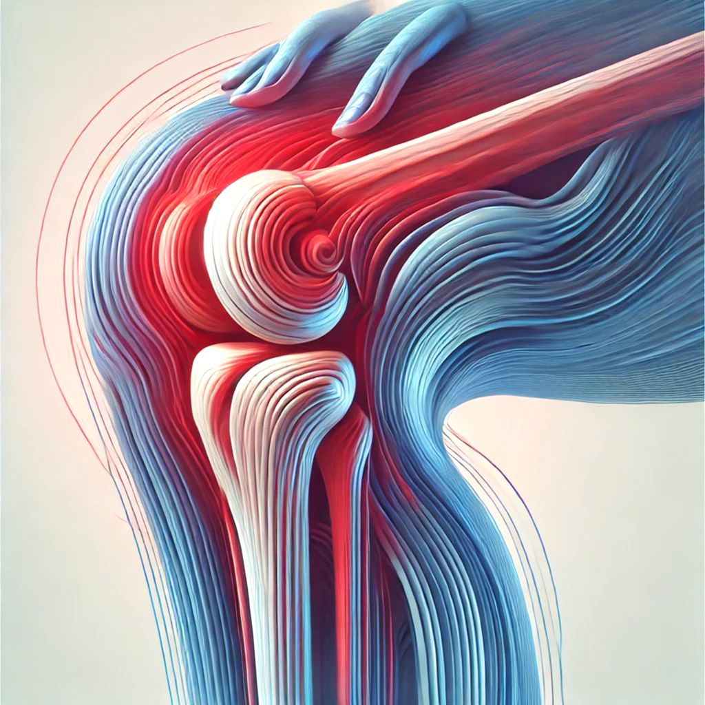
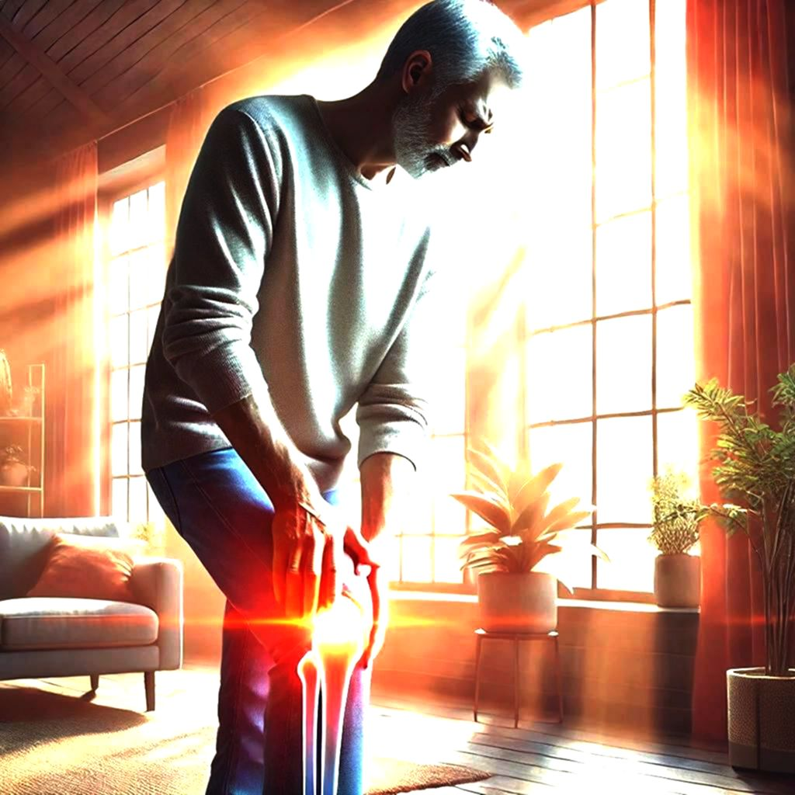

Introducción a la Salud Articular
Las articulaciones son fundamentales para nuestra movilidad y calidad de vida. Este artículo exhaustivo te guiará a través de estrategias esenciales para mantener tus articulaciones fuertes y saludables.
Anatomía de las Articulaciones
Comprender la estructura de tus articulaciones es el primer paso para su cuidado adecuado. Las articulaciones conectan huesos y permiten movimiento, utilizando cartílagos, ligamentos y líquido sinovial.
Nutrición para Articulaciones Saludables
Una dieta equilibrada rica en omega-3, vitamina D y minerales puede fortalecer significativamente la salud de tus articulaciones. Alimentos como pescado, nueces y verduras son aliados fundamentales.
Ejercicios para Fortalecer Articulaciones
El ejercicio regular, especialmente actividades de bajo impacto como natación y yoga, pueden mejorar la flexibilidad y reducir la inflamación articular.
Prevención de Enfermedades Articulares
Mantener un peso saludable, evitar movimientos repetitivos y realizar chequeos regulares son estrategias clave para prevenir problemas articulares.
Tratamientos Naturales
Algunas terapias naturales como el aceite de pescado, la glucosamina y la curcuma pueden ayudar a reducir la inflamación y mejorar la salud articular.
Cuando Consultar a un Profesional
Dolores persistentes, hinchazón o limitación de movimiento son señales que requieren atención profesional inmediata.
Contáctanos
Política de Privacidad
Nos comprometemos a proteger tu información personal. No compartimos datos con terceros y utilizamos métodos seguros de almacenamiento.
Términos de Uso
Al utilizar este sitio web, aceptas nuestros términos de uso que incluyen el uso responsable de la información proporcionada.